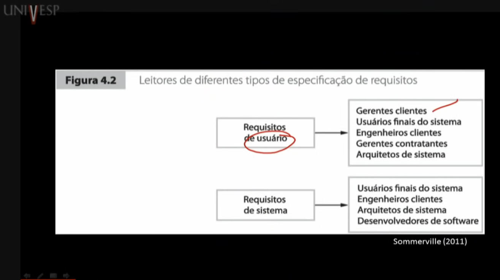
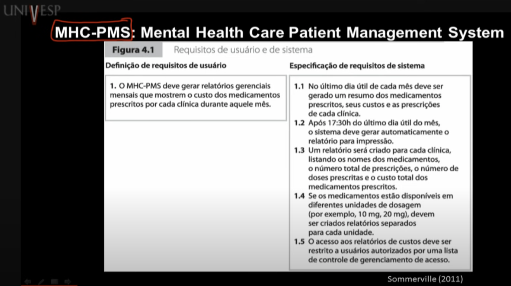
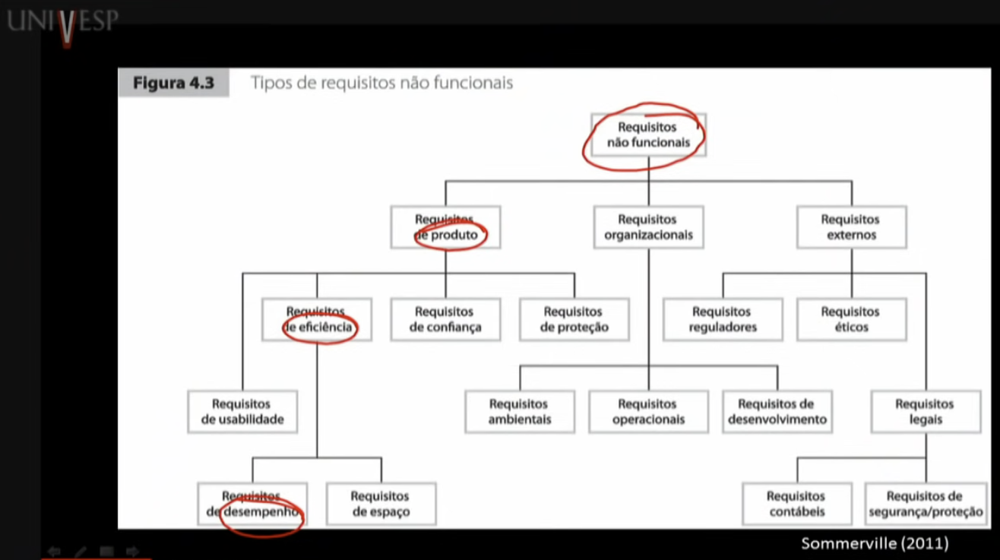
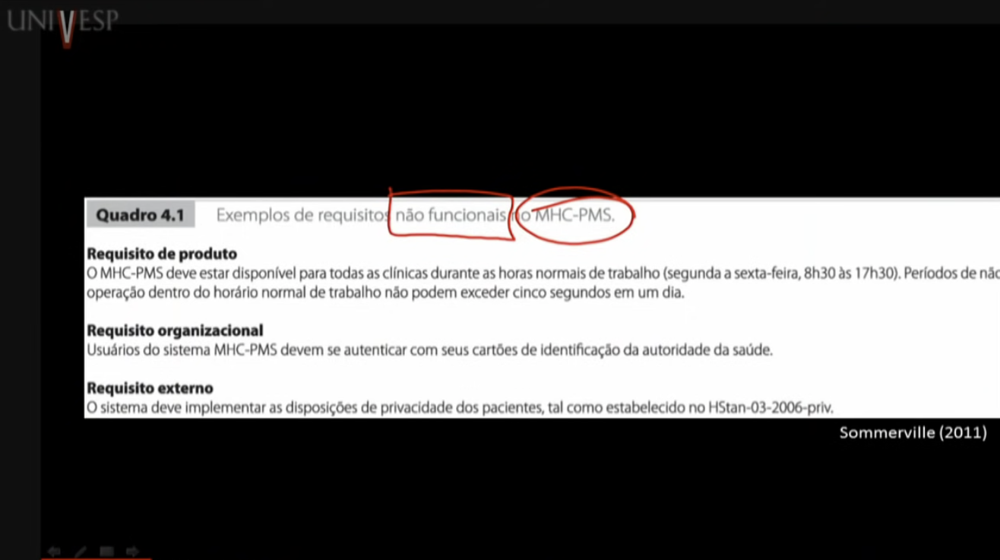
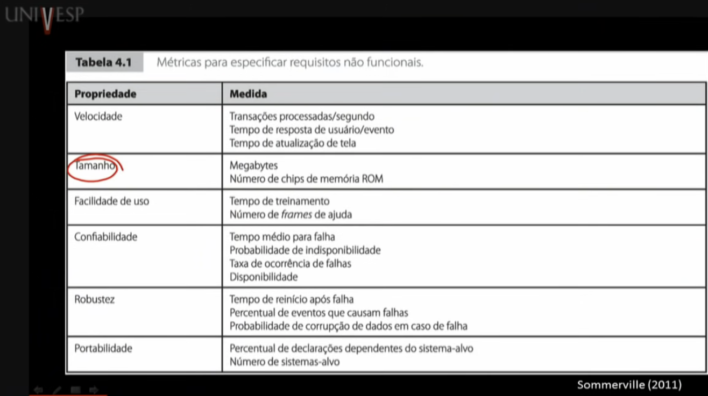

Disciplinas
ENGENHARIA DE SOFTWARE Concluído
Materiais
Vídeo 2 - Engenharia de Software - Aula 05 - Tipos de requisitos sendProf.° ministrante: Marcelo Fantinato (UNIVESP)
Requisitos / Engenharia de requisitos
Requisitos de sistema/softwareDescrições do que o sistema/software deve fazer, os serviços que ele oferece, as restrições sobre seu funcionamento.
Refletem as necessidades dos clientes que servem a uma finalidade determinada.
Engenharia de requisitos (Requirements engineering): processo de descobrir, analisar documentos, verificar e validar esses serviços e restrições.
Níveis de requisitos
Nível de requisito varia:Declaração abstrata (alto nível) → requisito de usuário
Definição detalhada (baixo nível) → requisito de sistema
Requisito de usuário:- Linguagem natural (podendo ser apoiado por diagramas)
- Quais serviços o sistema deverá fornecer a seus usuários
- Quais restrições com as quais o sistema deverá operar
Exemplo:

- Costuma ser chamado de “especificação de requisitos"
- Deve definir exatamente o que deve ser implementado
- Pode ser parte do contrato entre comprador/desenvolvedores
Exemplo:

Tipos de requisitos
Requisitos Funcionais (RF)- Declarações de serviços que o sistema deve fornecer.
- Declarações de como o sistema deve reagir a entradas específicas.
- Declarações de como o sistema deve se comportar em determinadas situações.
- Declarações do que o sistema não deve fazer.
Exemplos - sistema MHC-PMS:
- Um usuário deve ser capaz de pesquisar as listas de agendamentos para todas as clínicas.
- O sistema deve gerar a cada dia, para cada clínica, a lista dos pacientes para as consultas daquele dia.
- Cada membro da equipe que usa o sistema deve ser identificado apenas por seu número de oito dígitos.
- Restrições aos serviços ou funções oferecidos pelo sistema.
- Incluem restrições de tempo, restrições no processo de desenvolvimento e restrições impostas por normas.
- Geralmente, aplicam-se ao sistema como um todo.
Exemplos:

Exemplos - sistema MHC-PMS:

Exemplos:
